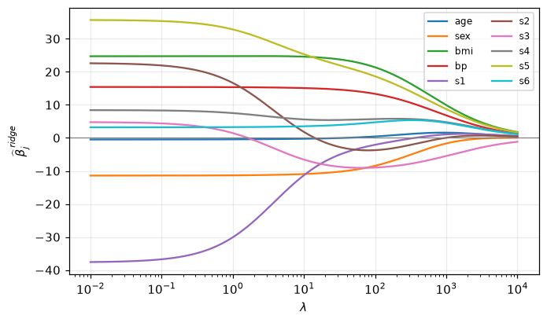
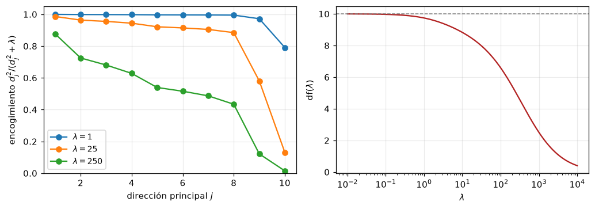
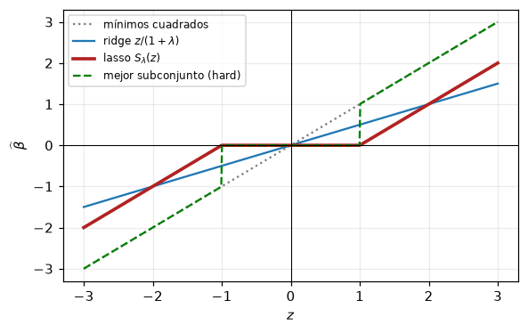
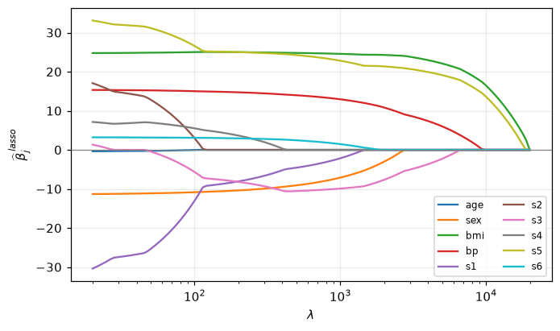
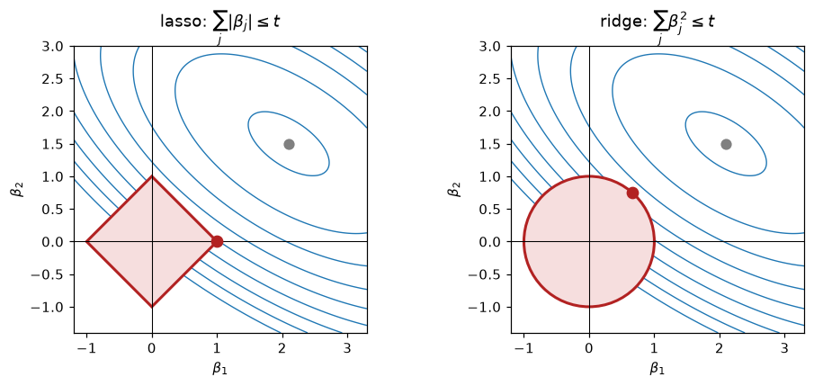
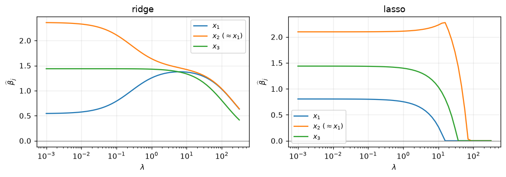
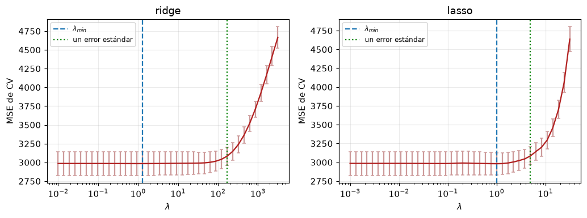
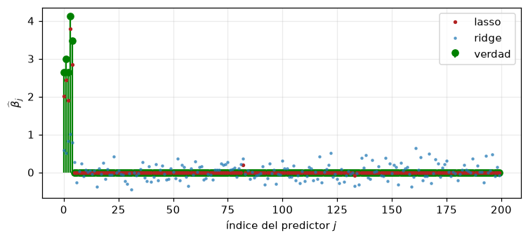

import numpy as np
import pandas as pd
import matplotlib.pyplot as plt
plt.rcParams.update({"figure.figsize": (6, 3.6), "axes.grid": True,
"grid.alpha": 0.25, "figure.dpi": 110})
np.set_printoptions(precision=3, suppress=True)Regresión con regularización Ridge y Lasso

Cuaderno de acompañamiento de la clase Regression with Regularisation: Ridge and Lasso.
Contenido:
- Por qué fallan los mínimos cuadrados.
- Ridge desde cero y su lectura vía SVD.
- Grados de libertad efectivos.
- Lasso: soft thresholding y descenso por coordenadas implementado a mano.
- Geometría de las regiones de restricción.
- Predictores correlacionados: dónde difieren ridge y lasso.
- Elección de \(\lambda\) por validación cruzada y la regla de un error estándar.
- El caso \(p > N\).
Notación (ESL). \(\mathbf{X} \in \mathbb{R}^{N\times p}\) matriz de diseño, \(\mathbf{y} \in \mathbb{R}^N\) respuesta, \(\beta \in \mathbb{R}^p\) coeficientes, \(\lambda\) parámetro de regularización, \(t\) el presupuesto de la restricción (no un objetivo: los objetivos \(t_n\) de Bishop son los \(y_i\) de ESL).
1. Datos y estandarización
Usamos el conjunto diabetes (\(N = 442\), \(p = 10\)), el ejemplo estándar de sklearn.
Ridge y lasso no son invariantes al reescalado de las entradas: ambas penalizaciones suman coeficientes a través de predictores, de modo que si uno está en milímetros y otro en kilómetros la suma no tiene sentido. Por eso:
- estandarizamos las columnas de \(\mathbf{X}\) (media 0, varianza 1),
- centramos \(\mathbf{y}\), con lo cual el intercepto \(\beta_0\) desaparece y nunca se penaliza.
from sklearn.datasets import load_diabetes
datos = load_diabetes()
nombres = list(datos.feature_names)
X = np.asarray(datos.data, dtype=float)
X = (X - X.mean(0)) / X.std(0)
y = np.asarray(datos.target, dtype=float)
y = y - y.mean()
print("X:", X.shape, " y:", y.shape)
print("medias de X (≈0):", X.mean(0)[:5])
print("desv. de X (≈1): ", X.std(0)[:5])X: (442, 10) y: (442,)
medias de X (≈0): [-0. 0. 0. -0. 0.]
desv. de X (≈1): [1. 1. 1. 1. 1.]2. Por qué fallan los mínimos cuadrados
\[\widehat{\beta}^{\,\mathrm{ls}} = (\mathbf{X}^{\top}\mathbf{X})^{-1}\mathbf{X}^{\top}\mathbf{y}, \qquad \operatorname{Cov}(\widehat{\beta}^{\,\mathrm{ls}}) = \sigma^2 (\mathbf{X}^{\top}\mathbf{X})^{-1}\]
Cuando las columnas de \(\mathbf{X}\) son casi dependientes, \(\mathbf{X}^{\top}\mathbf{X}\) está mal condicionada y la varianza de los coeficientes explota. Miremos los valores singulares \(d_j\) y las correlaciones:
XtX = X.T @ X
d = np.linalg.svd(X, compute_uv=False)
print(f"número de condición de X: {d[0] / d[-1]:8.1f}")
print(f"número de condición de X'X: {(d[0] / d[-1]) ** 2:8.1f}")
print("\nvalores singulares d_j:", d)
corr = pd.DataFrame(X, columns=nombres).corr()
print("\npares más correlacionados:")
pares = (corr.where(~np.eye(len(nombres), dtype=bool))
.stack().abs().sort_values(ascending=False))
print(pares.head(4))número de condición de X: 21.7
número de condición de X'X: 470.1
valores singulares d_j: [42.175 25.683 23.088 20.55 17.108 16.322 15.4 13.845 5.884 1.945]
pares más correlacionados:
s2 s1 0.896663
s1 s2 0.896663
s3 s4 0.738493
s4 s3 0.738493
dtype: float64El condicionamiento global es moderado (los diabetes son datos benignos), pero el último valor singular es unas 20 veces menor que el primero y los predictores s1 y s2 están correlacionados por encima de 0.89. Vea qué hacen los mínimos cuadrados con ese par: coeficientes grandes y de signo opuesto que se cancelan entre sí.
beta_ls = np.linalg.lstsq(X, y, rcond=None)[0]
pd.DataFrame({"beta_ls": beta_ls}, index=nombres).T| age | sex | bmi | bp | s1 | s2 | s3 | s4 | s5 | s6 | |
|---|---|---|---|---|---|---|---|---|---|---|
| beta_ls | -0.476121 | -11.406867 | 24.726549 | 15.429404 | -37.679953 | 22.676163 | 4.806138 | 8.422039 | 35.734446 | 3.216674 |
3. Ridge regression desde cero
\[\widehat{\beta}^{\,\mathrm{ridge}} = (\mathbf{X}^{\top}\mathbf{X} + \lambda\mathbf{I})^{-1}\mathbf{X}^{\top}\mathbf{y}\]
Sumar \(\lambda\) a la diagonal es todo el contenido computacional del método. Y garantiza la invertibilidad: los autovalores de \(\mathbf{X}^{\top}\mathbf{X}\) son \(\ge 0\), así que sumar \(\lambda\mathbf{I}\) los desplaza todos hacia arriba y el menor pasa a valer al menos \(\lambda > 0\).
def ridge(X, y, lam):
"""Solución cerrada de ridge. Supone X estandarizada e y centrada."""
p = X.shape[1]
return np.linalg.solve(X.T @ X + lam * np.eye(p), X.T @ y)
from sklearn.linear_model import Ridge
lam = 25.0
b_propio = ridge(X, y, lam)
b_sklearn = Ridge(alpha=lam, fit_intercept=False).fit(X, y).coef_
print("máxima discrepancia con sklearn:", np.abs(b_propio - b_sklearn).max())
pd.DataFrame({"ridge (λ=25)": b_propio, "mínimos cuadrados": beta_ls}, index=nombres).Tmáxima discrepancia con sklearn: 2.220446049250313e-14| age | sex | bmi | bp | s1 | s2 | s3 | s4 | s5 | s6 | |
|---|---|---|---|---|---|---|---|---|---|---|
| ridge (λ=25) | -0.100621 | -10.432835 | 24.031034 | 14.752290 | -6.008642 | -2.144418 | -8.478661 | 5.408238 | 22.644509 | 3.820133 |
| mínimos cuadrados | -0.476121 | -11.406867 | 24.726549 | 15.429404 | -37.679953 | 22.676163 | 4.806138 | 8.422039 | 35.734446 | 3.216674 |
Trayectorias de los coeficientes
Cada curva es un \(\widehat{\beta}_j\) en función de \(\lambda\). Léala de derecha a izquierda: en el extremo derecho \(\lambda \to 0\) y son los mínimos cuadrados; al avanzar hacia la izquierda todos los coeficientes son arrastrados hacia cero, de forma continua y sin alcanzarlo nunca exactamente. Esa es la diferencia con el lasso.
lams = np.logspace(-2, 4, 200)
B_ridge = np.array([ridge(X, y, l) for l in lams])
fig, ax = plt.subplots(figsize=(7, 4))
for j, nom in enumerate(nombres):
ax.semilogx(lams, B_ridge[:, j], label=nom)
ax.axhline(0, color="gray", lw=0.8)
ax.set_xlabel(r"$\lambda$"); ax.set_ylabel(r"$\widehat{\beta}_j^{\,ridge}$")
ax.legend(ncol=2, fontsize=8); plt.show()
4. Ridge vía la SVD: qué se encoge y por qué
Con \(\mathbf{X} = \mathbf{U}\mathbf{D}\mathbf{V}^{\top}\),
\[\mathbf{X}\widehat{\beta}^{\,\mathrm{ls}} = \sum_j \mathbf{u}_j\,\mathbf{u}_j^{\top}\mathbf{y}, \qquad \mathbf{X}\widehat{\beta}^{\,\mathrm{ridge}} = \sum_j \mathbf{u}_j\, \frac{d_j^2}{d_j^2+\lambda}\,\mathbf{u}_j^{\top}\mathbf{y}\]
Las dos sumas son idénticas salvo por el factor \(d_j^2/(d_j^2+\lambda) \le 1\). Y ese factor es más pequeño cuanto menor es \(d_j\), es decir, en las direcciones donde los datos varían menos y donde por tanto sabemos menos. Ridge encoge más justo donde menos información hay.
U, dvals, Vt = np.linalg.svd(X, full_matrices=False)
# verificación numérica de la identidad
lam = 25.0
lhs = X @ ridge(X, y, lam)
rhs = U @ ((dvals ** 2 / (dvals ** 2 + lam)) * (U.T @ y))
print("máxima discrepancia de la identidad SVD:", np.abs(lhs - rhs).max())
fig, ax = plt.subplots(1, 2, figsize=(9.5, 3.4))
for l in [1.0, 25.0, 250.0]:
ax[0].plot(np.arange(1, dvals.size + 1), dvals ** 2 / (dvals ** 2 + l),
"o-", label=rf"$\lambda={l:g}$")
ax[0].set_xlabel("dirección principal $j$")
ax[0].set_ylabel(r"encogimiento $d_j^2/(d_j^2+\lambda)$")
ax[0].set_ylim(0, 1.05); ax[0].legend(fontsize=9)
df = np.array([np.sum(dvals ** 2 / (dvals ** 2 + l)) for l in lams])
ax[1].semilogx(lams, df, color="firebrick")
ax[1].axhline(X.shape[1], color="gray", ls="--", lw=1)
ax[1].set_xlabel(r"$\lambda$"); ax[1].set_ylabel(r"df$(\lambda)$")
fig.tight_layout(); plt.show()máxima discrepancia de la identidad SVD: 2.6290081223123707e-13
Grados de libertad efectivos
\[\mathrm{df}(\lambda) = \operatorname{tr}\big[\mathbf{X}(\mathbf{X}^{\top}\mathbf{X}+\lambda\mathbf{I})^{-1}\mathbf{X}^{\top}\big] = \sum_{j=1}^{p}\frac{d_j^2}{d_j^2+\lambda}\]
Es la complejidad honesta de un ajuste ridge: no usa \(p\) parámetros, usa \(\mathrm{df}(\lambda)\) de ellos, un número fraccionario entre \(p\) y \(0\).
def df_ridge(X, lam):
d = np.linalg.svd(X, compute_uv=False)
return float(np.sum(d ** 2 / (d ** 2 + lam)))
# la traza y la suma de factores coinciden
lam = 25.0
H = X @ np.linalg.solve(X.T @ X + lam * np.eye(X.shape[1]), X.T)
print(f"traza de la matriz sombrero: {np.trace(H):.6f}")
print(f"suma de los factores: {df_ridge(X, lam):.6f}")
for l in [0.0, 1.0, 25.0, 250.0, 1e4]:
print(f"λ = {l:8.1f} -> df = {df_ridge(X, l):.2f}")traza de la matriz sombrero: 8.185829
suma de los factores: 8.185829
λ = 0.0 -> df = 10.00
λ = 1.0 -> df = 9.74
λ = 25.0 -> df = 8.19
λ = 250.0 -> df = 5.02
λ = 10000.0 -> df = 0.405. El lasso
\[\widehat{\beta}^{\,\mathrm{lasso}} = \arg\min_{\beta}\Big\{ \tfrac{1}{2}\sum_{i=1}^{N}\Big(y_i - \sum_j x_{ij}\beta_j\Big)^2 + \lambda\sum_j |\beta_j|\Big\}\]
Un solo carácter cambió respecto de ridge: el cuadrado pasó a valor absoluto. El problema sigue siendo convexo, pero deja de ser diferenciable en \(\beta_j = 0\) — y ahí está, precisamente, el mecanismo que produce ceros exactos.
Soft thresholding
En el caso ortonormal (\(\mathbf{X}^{\top}\mathbf{X} = \mathbf{I}\)) los tres estimadores tienen forma cerrada (ESL tabla 3.4):
| estimador | \(\widehat{\beta}_j\) |
|---|---|
| mejor subconjunto | \(\widehat{\beta}_j^{\,\mathrm{ls}}\cdot\mathbb{1}(|\widehat{\beta}_j^{\,\mathrm{ls}}| \ge\) umbral\()\) |
| ridge | \(\widehat{\beta}_j^{\,\mathrm{ls}}/(1+\lambda)\) |
| lasso | \(\operatorname{sign}(\widehat{\beta}_j^{\,\mathrm{ls}})(|\widehat{\beta}_j^{\,\mathrm{ls}}|-\lambda)_+\) |
def soft(z, lam):
"""Operador de soft thresholding S_lambda(z)."""
return np.sign(z) * np.maximum(np.abs(z) - lam, 0.0)
z = np.linspace(-3, 3, 600)
lam = 1.0
plt.plot(z, z, ":", color="gray", label="mínimos cuadrados")
plt.plot(z, z / (1 + lam), label=r"ridge $z/(1+\lambda)$")
plt.plot(z, soft(z, lam), color="firebrick", lw=2.4, label=r"lasso $S_\lambda(z)$")
plt.plot(z, np.where(np.abs(z) > lam, z, 0.0), "--", color="green",
label="mejor subconjunto (hard)")
plt.axhline(0, color="k", lw=0.7); plt.axvline(0, color="k", lw=0.7)
plt.xlabel("$z$"); plt.ylabel(r"$\widehat{\beta}$"); plt.legend(fontsize=8); plt.show()
La región plana del lasso en \([-\lambda, \lambda]\) es lo que produce selección. Su continuidad es lo que le da estabilidad (compare con el salto del mejor subconjunto). Y el desplazamiento constante significa que el lasso sesga también los coeficientes grandes: ese es su inconveniente conocido.
Descenso por coordenadas
El lasso no tiene forma cerrada, pero cada coordenada sí la tiene. Optimizamos un coeficiente a la vez: cada paso es un soft threshold del residuo parcial.
\[\widehat{\beta}_j \leftarrow \frac{S_\lambda\big(\sum_i x_{ij} r_i^{(j)}\big)}{\sum_i x_{ij}^2}, \qquad r_i^{(j)} = y_i - \sum_{k\neq j} x_{ik}\widehat{\beta}_k\]
def lasso_cd(X, y, lam, n_iter=500, tol=1e-8, beta0=None):
"""Lasso por descenso por coordenadas. Objetivo: 0.5*RSS + lam*||beta||_1."""
N, p = X.shape
beta = np.zeros(p) if beta0 is None else beta0.copy()
normas = (X ** 2).sum(0)
r = y - X @ beta
for _ in range(n_iter):
maxcambio = 0.0
for j in range(p):
b_old = beta[j]
rho = X[:, j] @ r + normas[j] * b_old # residuo parcial
beta[j] = soft(rho, lam) / normas[j]
if beta[j] != b_old:
r += X[:, j] * (b_old - beta[j]) # actualización incremental
maxcambio = max(maxcambio, abs(beta[j] - b_old))
if maxcambio < tol:
break
return beta
from sklearn.linear_model import Lasso
# lambda_max es el menor lambda que anula todos los coeficientes; parametrizamos respecto
# de él para que la escala sea comparable entre conjuntos de datos.
lam_max = np.abs(X.T @ y).max()
lam = 0.1 * lam_max
print(f"lambda_max = {lam_max:.1f} -> lambda = {lam:.1f}")
b_cd = lasso_cd(X, y, lam)
# sklearn minimiza (1/(2N))*RSS + alpha*||beta||_1 -> alpha = lam / N
b_sk = Lasso(alpha=lam / X.shape[0], fit_intercept=False,
max_iter=200000, tol=1e-12).fit(X, y).coef_
print("máxima discrepancia con sklearn:", np.abs(b_cd - b_sk).max())
pd.DataFrame({"lasso (propio)": b_cd, "lasso (sklearn)": b_sk}, index=nombres).Tlambda_max = 19960.7 -> lambda = 1996.1
máxima discrepancia con sklearn: 4.67990091124193e-09| age | sex | bmi | bp | s1 | s2 | s3 | s4 | s5 | s6 | |
|---|---|---|---|---|---|---|---|---|---|---|
| lasso (propio) | 0.0 | -3.032327 | 24.282236 | 10.833472 | -0.0 | -0.0 | -7.678132 | 0.0 | 21.35804 | 0.0 |
| lasso (sklearn) | 0.0 | -3.032327 | 24.282236 | 10.833472 | -0.0 | -0.0 | -7.678132 | 0.0 | 21.35804 | 0.0 |
Los coeficientes nulos son exactamente cero, no aproximadamente:
print("coeficientes exactamente nulos:", [n for n, b in zip(nombres, b_cd) if b == 0.0])
print("variables seleccionadas: ", [n for n, b in zip(nombres, b_cd) if b != 0.0])coeficientes exactamente nulos: ['age', 's1', 's2', 's4', 's6']
variables seleccionadas: ['sex', 'bmi', 'bp', 's3', 's5']Trayectorias del lasso
Con warm starts: empezamos con \(\lambda\) grande (todos los coeficientes nulos) y lo bajamos en pasos pequeños, inicializando cada ajuste en la solución anterior. Las soluciones vecinas se parecen, así que cada ajuste converge en pocas pasadas.
Observe dos diferencias respecto de ridge: las trayectorias son lineales a trozos, y los coeficientes están en cero exacto durante intervalos completos antes de activarse.
lams_l = np.logspace(np.log10(lam_max), np.log10(lam_max * 1e-3), 120)
B_lasso, beta = [], np.zeros(X.shape[1])
for l in lams_l:
beta = lasso_cd(X, y, l, beta0=beta) # warm start
B_lasso.append(beta.copy())
B_lasso = np.array(B_lasso)
fig, ax = plt.subplots(figsize=(7, 4))
for j, nom in enumerate(nombres):
ax.semilogx(lams_l, B_lasso[:, j], label=nom)
ax.axhline(0, color="gray", lw=0.8)
ax.set_xlabel(r"$\lambda$"); ax.set_ylabel(r"$\widehat{\beta}_j^{\,lasso}$")
ax.legend(ncol=2, fontsize=8); plt.show()
orden = []
for k in range(len(lams_l)):
for j in np.where(B_lasso[k] != 0)[0]:
if nombres[j] not in orden:
orden.append(nombres[j])
print("orden de entrada de las variables:", orden)
orden de entrada de las variables: ['bmi', 's5', 'bp', 's3', 'sex', 's6', 's1', 's4', 's2', 'age']Advertencia. Ese orden de entrada no es un ranking fiable de importancia cuando los predictores están correlacionados. Lo vemos en la sección 7.
6. La geometría (ESL fig. 3.11)
La solución es el punto donde una elipse de RSS que se expande toca por primera vez la región factible. El rombo del lasso tiene esquinas sobre los ejes, y una esquina es justamente donde un coeficiente vale cero. El disco de ridge no tiene esquinas.
from matplotlib.patches import Circle, Polygon
beta_ols = np.array([2.1, 1.5])
A = np.array([[1.0, 0.75], [0.75, 1.6]])
b1, b2 = np.meshgrid(np.linspace(-1.2, 3.3, 400), np.linspace(-1.4, 3.0, 400))
D1, D2 = b1 - beta_ols[0], b2 - beta_ols[1]
RSS = A[0, 0] * D1 ** 2 + 2 * A[0, 1] * D1 * D2 + A[1, 1] * D2 ** 2
fig, axes = plt.subplots(1, 2, figsize=(9, 4))
for ax, tipo in zip(axes, ["lasso", "ridge"]):
ax.contour(b1, b2, RSS, levels=np.linspace(0.25, 14, 9),
colors=["tab:blue"], linewidths=0.9)
if tipo == "lasso":
ax.add_patch(Polygon([[1, 0], [0, 1], [-1, 0], [0, -1]],
fc="#f6dede", ec="firebrick", lw=2, zorder=2))
sol = np.array([1.0, 0.0])
ax.set_title(r"lasso: $\sum_j |\beta_j| \leq t$")
else:
ax.add_patch(Circle((0, 0), 1.0, fc="#f6dede", ec="firebrick", lw=2, zorder=2))
th = np.linspace(0, 2 * np.pi, 4000)
pts = np.c_[np.cos(th), np.sin(th)]
dd = pts - beta_ols
q = A[0, 0] * dd[:, 0] ** 2 + 2 * A[0, 1] * dd[:, 0] * dd[:, 1] + A[1, 1] * dd[:, 1] ** 2
sol = pts[np.argmin(q)]
ax.set_title(r"ridge: $\sum_j \beta_j^2 \leq t$")
ax.plot(*beta_ols, "o", color="gray", ms=7, zorder=4)
ax.plot(*sol, "o", color="firebrick", ms=8, zorder=5)
ax.axhline(0, color="k", lw=0.7); ax.axvline(0, color="k", lw=0.7)
ax.set_xlabel(r"$\beta_1$"); ax.set_ylabel(r"$\beta_2$")
ax.set_aspect("equal"); ax.grid(False)
print(f"{tipo}: solución = {np.round(sol, 3)}")
fig.tight_layout(); plt.show()lasso: solución = [1. 0.]
ridge: solución = [0.66 0.751]
7. Predictores correlacionados
Un experimento deliberadamente extremo: \(x_1\) y \(x_2\) son la misma variable subyacente con ruido distinto, y ambas contribuyen realmente a \(y\).
r = np.random.default_rng(4)
n = 120
z = r.normal(0, 1, n)
Xc = np.c_[z + r.normal(0, 0.05, n), # x1
z + r.normal(0, 0.05, n), # x2 ≈ x1
r.normal(0, 1, n)] # x3
Xc = (Xc - Xc.mean(0)) / Xc.std(0)
yc = 3 * z + 1.5 * Xc[:, 2] + r.normal(0, 0.5, n)
yc = yc - yc.mean()
print("correlación(x1, x2) =", np.corrcoef(Xc[:, 0], Xc[:, 1])[0, 1].round(4))
lams_c = np.logspace(-3, 2.5, 60)
Br = np.array([ridge(Xc, yc, l) for l in lams_c])
Bl = np.array([lasso_cd(Xc, yc, l * 5) for l in lams_c])
fig, axes = plt.subplots(1, 2, figsize=(9.5, 3.4))
for ax, B, tit in zip(axes, [Br, Bl], ["ridge", "lasso"]):
for j, lab in enumerate(["$x_1$", r"$x_2\ (\approx x_1)$", "$x_3$"]):
ax.semilogx(lams_c, B[:, j], label=lab)
ax.axhline(0, color="gray", lw=0.8); ax.set_title(tit)
ax.set_xlabel(r"$\lambda$"); ax.set_ylabel(r"$\widehat{\beta}_j$"); ax.legend(fontsize=9)
fig.tight_layout(); plt.show()correlación(x1, x2) = 0.9978
Ridge reparte el peso entre las dos copias: para una contribución total dada, \(\sum_j \beta_j^2\) es mínima cuando el peso está distribuido. El lasso escoge una y anula la otra — y cuál gana lo decide esencialmente el ruido.
Comprobémoslo: repetimos el experimento completo con 300 conjuntos de datos frescos — exactamente el marco de la descomposición sesgo–varianza de la clase anterior— y contamos cuál de las dos copias sobrevive.
def genera_correlados(rr, n=120):
z = rr.normal(0, 1, n)
Xg = np.c_[z + rr.normal(0, 0.05, n), z + rr.normal(0, 0.05, n), rr.normal(0, 1, n)]
Xg = (Xg - Xg.mean(0)) / Xg.std(0)
yg = 3 * z + 1.5 * Xg[:, 2] + rr.normal(0, 0.5, n)
return Xg, yg - yg.mean()
rr = np.random.default_rng(0)
conteo = {"solo x1": 0, "solo x2": 0, "ambas": 0, "ninguna": 0}
n_rep = 300
for _ in range(n_rep):
Xg, yg = genera_correlados(rr)
b = lasso_cd(Xg, yg, 220.0)
a1, a2 = b[0] != 0, b[1] != 0
conteo["ambas" if a1 and a2 else "solo x1" if a1 else "solo x2" if a2 else "ninguna"] += 1
print(f"variable seleccionada por el lasso en {n_rep} conjuntos de datos independientes:")
for k, v in conteo.items():
print(f" {k:9s}: {v:3d} ({100 * v / n_rep:.1f}%)")variable seleccionada por el lasso en 300 conjuntos de datos independientes:
solo x1 : 108 (36.0%)
solo x2 : 110 (36.7%)
ambas : 82 (27.3%)
ninguna : 0 (0.0%)Advertencia interpretativa. Que el lasso anule una variable no significa que la variable sea irrelevante: puede significar que se seleccionó una gemela colineal en su lugar. Si le importa qué variables importan, reajuste sobre el conjunto seleccionado, verifique la estabilidad con bootstrap, o use elastic net.
8. Elección de \(\lambda\): validación cruzada y la regla de un error estándar
\(\lambda\) no se estima con el objetivo de entrenamiento — ese objetivo es monótono en \(\lambda\) y siempre diría cero. Es un hiperparámetro, elegido por validación.
La curva de CV es plana cerca de su mínimo y cada punto tiene error de muestreo, así que \(\lambda_{\min}\) es una elección ruidosa. La convención (ESL §7.10) es tomar el \(\lambda\) más grande cuyo error de CV esté dentro de un error estándar del mejor: se cede una cantidad estadísticamente indistinguible de precisión y se gana un modelo más simple.
Nota sobre fuga de información: la estandarización debe calcularse dentro de cada pliegue de entrenamiento. Aquí usamos un Pipeline para que sklearn lo garantice.
from sklearn.linear_model import Ridge, Lasso
from sklearn.model_selection import KFold
from sklearn.pipeline import make_pipeline
from sklearn.preprocessing import StandardScaler
def curva_cv(Modelo, alphas, X, y, K=10, semilla=0):
"""MSE de CV con su error estándar. Estandariza dentro de cada pliegue."""
kf = KFold(K, shuffle=True, random_state=semilla)
medias, ses = [], []
for a in alphas:
errs = []
for tr, va in kf.split(X):
mdl = make_pipeline(StandardScaler(), Modelo(alpha=a, max_iter=100000))
mdl.fit(X[tr], y[tr])
errs.append(np.mean((mdl.predict(X[va]) - y[va]) ** 2))
errs = np.array(errs)
medias.append(errs.mean())
ses.append(errs.std(ddof=1) / np.sqrt(K))
return np.array(medias), np.array(ses)
def regla_1se(alphas, medias, ses):
"""Devuelve (alpha_min, alpha_1se). Supone alphas creciente."""
i = int(np.argmin(medias))
umbral = medias[i] + ses[i]
cand = np.where(medias <= umbral)[0]
return alphas[i], alphas[int(cand.max())]
alphas_r = np.logspace(-2, 3.5, 40)
alphas_l = np.logspace(-3, 1.5, 40)
fig, axes = plt.subplots(1, 2, figsize=(9.5, 3.6))
elegidos = {}
for ax, (nom, Modelo, alphas) in zip(axes, [("ridge", Ridge, alphas_r),
("lasso", Lasso, alphas_l)]):
m, s = curva_cv(Modelo, alphas, X, y)
a_min, a_1se = regla_1se(alphas, m, s)
elegidos[nom] = (a_min, a_1se)
ax.errorbar(alphas, m, yerr=s, color="firebrick", ecolor="#c99", capsize=2)
ax.set_xscale("log")
ax.axvline(a_min, ls="--", color="tab:blue", label=r"$\lambda_{min}$")
ax.axvline(a_1se, ls=":", color="green", label="un error estándar")
ax.set_title(nom); ax.set_xlabel(r"$\lambda$"); ax.set_ylabel("MSE de CV")
ax.legend(fontsize=8)
fig.tight_layout(); plt.show()
for nom, (a_min, a_1se) in elegidos.items():
print(f"{nom}: λ_min = {a_min:.4g} λ_1se = {a_1se:.4g}")
ridge: λ_min = 1.304 λ_1se = 170.1
lasso: λ_min = 1 λ_1se = 4.924El modelo lasso elegido por la regla de un error estándar es notablemente más disperso:
a_min, a_1se = elegidos["lasso"]
for etiqueta, a in [("λ_min", a_min), ("λ_1se", a_1se)]:
b = Lasso(alpha=a, fit_intercept=False, max_iter=100000).fit(X, y).coef_
sel = [n for n, v in zip(nombres, b) if v != 0]
print(f"{etiqueta:7s} (λ={a:7.4f}): {len(sel)} variables -> {sel}")λ_min (λ= 1.0000): 7 variables -> ['sex', 'bmi', 'bp', 's1', 's3', 's5', 's6']
λ_1se (λ= 4.9239): 5 variables -> ['sex', 'bmi', 'bp', 's3', 's5']Comparación honesta bajo la misma partición
Ridge, lasso y elastic net evaluados con los mismos pliegues. Compárelos también contra la línea base obligatoria: predecir siempre la media de \(y\).
from sklearn.linear_model import ElasticNet
from sklearn.model_selection import cross_val_score
kf = KFold(10, shuffle=True, random_state=0)
base = np.mean((y - y.mean()) ** 2)
modelos = {
"línea base (media)": None,
"mínimos cuadrados": make_pipeline(StandardScaler(), Ridge(alpha=1e-8)),
"ridge (λ_1se)": make_pipeline(StandardScaler(), Ridge(alpha=elegidos["ridge"][1])),
"lasso (λ_1se)": make_pipeline(StandardScaler(), Lasso(alpha=a_1se, max_iter=100000)),
"elastic net (α=0.5)": make_pipeline(
StandardScaler(), ElasticNet(alpha=a_1se, l1_ratio=0.5, max_iter=100000)),
}
filas = []
for nom, mdl in modelos.items():
mse = base if mdl is None else -cross_val_score(
mdl, X, y, cv=kf, scoring="neg_mean_squared_error").mean()
filas.append({"modelo": nom, "MSE de CV": mse, "mejora vs base": 1 - mse / base})
pd.DataFrame(filas).set_index("modelo").round(4)| MSE de CV | mejora vs base | |
|---|---|---|
| modelo | ||
| línea base (media) | 5929.8849 | 0.0000 |
| mínimos cuadrados | 2985.2366 | 0.4966 |
| ridge (λ_1se) | 3083.6082 | 0.4800 |
| lasso (λ_1se) | 3084.6048 | 0.4798 |
| elastic net (α=0.5) | 3889.6992 | 0.3441 |
9. El caso \(p > N\)
Con más predictores que observaciones, \(\mathbf{X}^{\top}\mathbf{X}\) es singular: mínimos cuadrados no tiene una solución, tiene un subespacio afín de soluciones, todas interpolando los datos con error de entrenamiento cero. La penalización devuelve la unicidad.
Además, el lasso selecciona como mucho \(N\) variables: un tope duro que es un artefacto puro de la geometría, y una de las razones para preferir elastic net aquí.
r = np.random.default_rng(7)
N_p, p_p, k_verdad = 50, 200, 5
Xp = r.normal(0, 1, (N_p, p_p))
beta_verdad = np.zeros(p_p)
beta_verdad[:k_verdad] = r.normal(3, 0.5, k_verdad) # solo 5 efectos reales
yp = Xp @ beta_verdad + r.normal(0, 1, N_p)
yp = yp - yp.mean()
print("rango de X'X:", np.linalg.matrix_rank(Xp.T @ Xp), "de", p_p, "-> singular")
print("error de entrenamiento de mínimos cuadrados:",
np.mean((Xp @ np.linalg.lstsq(Xp, yp, rcond=None)[0] - yp) ** 2).round(10))
b_r = ridge(Xp, yp, 25.0)
b_l = lasso_cd(Xp, yp, 25.0)
b_en = ElasticNet(alpha=25.0 / N_p, l1_ratio=0.5,
fit_intercept=False, max_iter=100000).fit(Xp, yp).coef_
reales = set(range(k_verdad))
for nom, b in [("ridge", b_r), ("lasso", b_l), ("elastic net", b_en)]:
nz = np.flatnonzero(b)
# "aciertos" = cuántos de los 5 predictores reales están entre los 5 mayores en |beta|.
# Contar solo los no nulos favorecería trivialmente a ridge, que nunca anula nada.
top5 = set(np.argsort(-np.abs(b))[:k_verdad])
print(f"{nom:12s}: {len(nz):3d} coef. no nulos | "
f"reales en el top-5 por |beta|: {len(top5 & reales)}/5 | "
f"error de estimación ||b - b*||₂ = {np.linalg.norm(b - beta_verdad):.2f}")rango de X'X: 50 de 200 -> singular
error de entrenamiento de mínimos cuadrados: 0.0
ridge : 200 coef. no nulos | reales en el top-5 por |beta|: 4/5 | error de estimación ||b - b*||₂ = 6.19
lasso : 9 coef. no nulos | reales en el top-5 por |beta|: 5/5 | error de estimación ||b - b*||₂ = 1.34
elastic net : 49 coef. no nulos | reales en el top-5 por |beta|: 5/5 | error de estimación ||b - b*||₂ = 4.20fig, ax = plt.subplots(figsize=(8, 3.2))
ax.stem(np.arange(p_p), beta_verdad, linefmt="green", markerfmt="go",
basefmt=" ", label="verdad")
ax.plot(b_l, ".", color="firebrick", ms=5, label="lasso")
ax.plot(b_r, ".", color="tab:blue", ms=4, alpha=0.6, label="ridge")
ax.set_xlabel("índice del predictor $j$"); ax.set_ylabel(r"$\widehat{\beta}_j$")
ax.legend(); plt.show()
El lasso recupera el soporte disperso casi exactamente. Ridge reparte peso pequeño entre los 200 predictores y no identifica ninguno: cuando la verdad es dispersa, la penalización \(L_1\) es el supuesto correcto.
Si la verdad fuese densa —muchos efectos pequeños— la conclusión se invertiría. La penalización codifica una creencia sobre el mundo.
10. Ejercicios
Verdad densa. Repita la sección 9 con
beta_verdad = r.normal(0, 0.3, p_p)(todos los coeficientes no nulos y pequeños). ¿Cuál de los tres métodos gana ahora? Relacione la respuesta con la última fila de la tabla resumen de la clase.Equivalencia \(\lambda \leftrightarrow t\). Para la malla
lamsde la sección 3, calcule \(t(\lambda) = \|\widehat{\beta}^{\,\mathrm{ridge}}(\lambda)\|_2^2\) y grafique \(t\) frente a \(\lambda\). Verifique numéricamente que la correspondencia es monótona y uno a uno.Penalizar el intercepto. Modifique
ridgepara que penalice también \(\beta_0\) sobre datos no centrados. Sume una constante grande a todos los \(y_i\) y compare las predicciones. Explique por qué el intercepto nunca debe penalizarse.Regresión por componentes principales. Implemente PCR: proyecte \(\mathbf{X}\) sobre sus \(k\) primeras direcciones principales y ajuste mínimos cuadrados. Superponga su curva de error a la de ridge en función de \(\mathrm{df}\). ESL §3.5.
Elastic net. Barra
l1_ratioen \(\{0, 0.25, 0.5, 0.75, 1\}\) sobre los datos correlacionados de la sección 7 y grafique cómo se reparte el peso entre \(x_1\) y \(x_2\). ¿A partir de qué valor deja de repartirse?CV anidada. El \(\lambda\) de la sección 8 se eligió por CV, así que el error de CV en ese \(\lambda\) es optimista. Implemente un bucle externo de CV que elija \(\lambda\) dentro de cada pliegue externo. ¿Cuánto cambia la estimación de rendimiento?